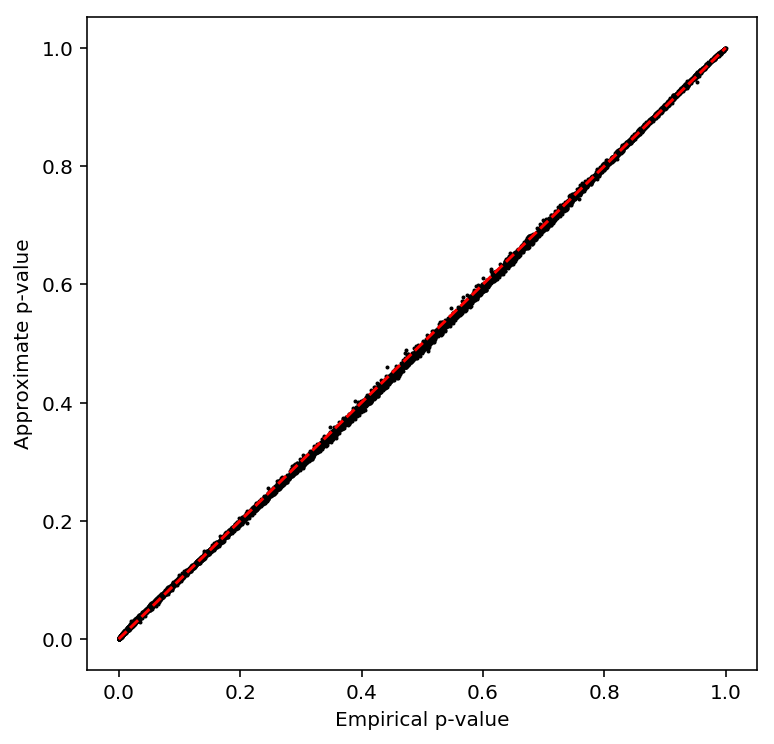
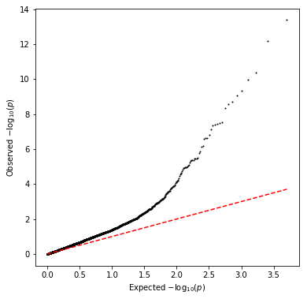
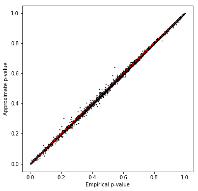
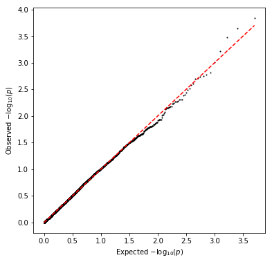

QTL mapping pipeline
Introduction
We previously estimated means and dispersions per individual, per gene. In our modular approach, we now fit log linear models for each:
\[ \ln \mu_{ik} = X \beta_\mu + \epsilon_\mu \]
\[ \ln \phi_{ik} = X \beta_\phi + \epsilon_\phi \]
where \(\mu_{ik}, \phi_{ik}\) are the mean and dispersion for individual \(i\), gene \(k\), \(X\) is the genotype matrix (\(n \times 1)\), and \(\beta_\mu, \beta_\phi\) are the effect sizes (scalar).
Here, we present the following analyses:
- We reproduce eQTLs called on the bulk RNA-Seq
- We replicate bulk eQTLs in the scRNA-Seq data
- We call mean QTLs in the scRNA-Seq data
- We call dispersion QTLs in the scRNA-Seq data
Implementation
def cpm(x): return pd.DataFrame(pandas2ri.ri2py(edger.cpm(numpy2ri(x.values), log=True)), columns=x.columns, index=x.index) def qqnorm(x): """Wrap around R qqnorm""" return np.asarray(rpy2.robjects.r['qqnorm'](numpy2ri(x))[0]) def bh(x): """Wrap around p.adjust(..., method='fdr')""" return np.asarray(rpy2.robjects.r['p.adjust'](numpy2ri(x), method='fdr'))
def qtltools_format(row): row['#Chr'] = 'chr{}'.format(row['chr'][2:]) row['gid'] = row.name row['pid'] = row.name # Important: qtltools expects TSS start/end if row['strand'] == '+': row['end'] = row['start'] else: row['start'] = row['end'] return row.loc[['#Chr', 'start', 'end', 'pid', 'gid', 'strand']] def write_pheno_file(pheno, gene_info, output_file, holdout=True, **kwargs): if holdout: genes = gene_info.loc[gene_info.apply(lambda x: bool(int(x['chr'][2:]) % 2), axis=1)] else: genes = gene_info (genes .apply(qtltools_format, **kwargs, axis=1) .merge(pheno, left_index=True, right_index=True) .to_csv(output_file, sep='\t', header=True, index=False, index_label=False))
export input=$input sbatch --partition=$partition #!/bin/bash module load bedtools bedtools sort -header -i $input | bgzip >$input.gz tabix -f -p bed $input.gz
export pheno=$pheno export geno=$geno export op=$op sbatch --partition=$partition -a 1-100 -J $pheno-qtl #!/bin/bash source activate scqtl qtltools cis --vcf $geno --bed $pheno.bed.gz $op --chunk $SLURM_ARRAY_TASK_ID 100 --out $pheno-qtl.$SLURM_ARRAY_TASK_ID.txt --seed 0
def _read_helper(pheno, columns): file_names = ['{}-qtl.{}.txt'.format(pheno, i) for i in range(1, 101)] return (pd.concat([pd.read_table(f, header=None, sep=' ') for f in file_names if os.path.exists(f) and os.path.getsize(f) > 0]) .rename(columns={i: x for i, x in enumerate(columns)}) .dropna() .sort_values('p_beta')) def read_fastqtl_output(pheno): columns = ['gene', 'num_snps', 'a', 'b', 'dummy', 'id', 'distance', 'p', 'beta', 'p_empirical', 'p_beta'] res = _read_helper(pheno, columns) # Drop the gene version number res['gene'] = res['gene'].apply(lambda x: x.split('.')[0]) res['chr'] = res['id'].apply(lambda x: x.split('.')[1]) res['pos'] = res['id'].apply(lambda x: x.split('.')[2]) res['id'] = res['id'].apply(lambda x: x.split('.')[0]) return res def read_qtltools_output(pheno): columns = ['gene', 'chr', 'start', 'end', 'strand', 'num_vars', 'distance', 'id', 'var_chr', 'var_start', 'var_end', 'df', 'dummy', 'a', 'b', 'p_nominal', 'beta', 'p_empirical', 'p_beta'] return _read_helper(pheno, columns)
def plot_approx_permutation(df): plt.clf() plt.gcf().set_size_inches(6, 6) plt.scatter(df['p_empirical'], df['p_beta'], s=1, c='k') plt.plot([0, 1], [0, 1], c='r', ls='--') plt.xlabel('Empirical p-value') plt.ylabel('Approximate p-value')
def parse_vcf_dosage(record): geno = [float(g) for g in record[9:]] return pd.Series(geno) def extract_qtl_gene_pair(qtl_gene_df, pheno_df, dosages): """Return aligned genotype and phenotype matrix for each QTL-gene pair in qtl_gene_df""" common_phenos, common_qtls = pheno_df.align(qtl_gene_df.set_index('gene'), join='inner', axis=0) # Important: individual IDs do not have the NA prefix in the VCF header = ['NA{}'.format(x) for x in pd.read_table(dosages, nrows=1, header=0).columns[9:]] genotypes = tabix.open(dosages) X, Y = (common_qtls .apply(lambda x: parse_vcf_dosage(next(genotypes.query(x['chr'], int(x['pos']) - 1, int(x['pos'])))), axis=1) .rename(columns={i: ind for i, ind in enumerate(header)}) .align(common_phenos, join='inner', axis=None)) return X, Y def replication_tests(X, Y): """Return a DataFrame containing replication p-values X - centered dosage matrix (num_genes, num_individuals) Y - phenotype matrix (num_genes, num_individuals) """ result = [] _sf = st.chi2(1).sf for (_, x), (name, y) in zip(X.iterrows(), Y.iterrows()): if np.isclose(x.std(), 0): print('Skipping {}'.format(name)) continue x = x.values.copy().reshape(-1, 1) y = y.values.copy().ravel() x -= x.mean() y -= y.mean() beta, rss, *_ = np.linalg.lstsq(x, y, rcond=-1) sigma2 = rss / y.shape[0] se = sigma2 / x.T.dot(x).ravel() pval = _sf(np.square(beta / se)) result.append({'gene': name, 'beta': beta[0], 'p': pval.ravel()[0]}) return pd.DataFrame.from_dict(result)
Test validity of approximate permutation test
qtltools tries to calibrate false discovery rates using the following
procedure:
- For each gene, permute the genotype data to estimate the null distribution of the p-values
- Fit a beta distribution to the permuted p-values via ML
- Compute the lower tail probability of the observed p-value, assuming it was generated from the fitted beta distribution
- Apply FDR correction on the set of lower tail probabilities (across all genes)
Test whether the beta approximation is appropriate for our sample size by subsetting GEUVADIS. Take all genes on chromosome 1.
geuvadis = [] for chunk in pd.read_table('/project/compbio/geuvadis/analysis_results/GD462.GeneQuantRPKM.50FN.samplename.resk10.txt.gz', chunksize=100): geuvadis.append(chunk.query('Chr == "1"')) geuvadis = pd.concat(geuvadis) geuvadis = geuvadis.set_index(geuvadis['Gene_Symbol'].apply(lambda x: x.split('.')[0]))
First, replicate the result in Delaneau et al 2017 by using all 462 individuals from GEUVADIS.
pd.Series(geuvadis.columns).sort_values().to_csv('/scratch/midway2/aksarkar/singlecell/geuvadis-subset.txt', header=None, index=None)
Write out the phenotype file for qtltools. Important: GEUVADIS VCFs code
chromosome without chr.
<<write-pheno-def>> write_pheno_file(geuvadis, gene_info, '/scratch/midway2/aksarkar/singlecell/test.bed')
Index the phenotype file. Important: # sorts before c, but after 1.
Perform SNP QC in plink.
sbatch --partition=broadwl --mem=2G #!/bin/bash plink --memory 2000 --geno 0.01 --maf 0.05 --keep-fam /scratch/midway2/aksarkar/singlecell/geuvadis-subset.txt --vcf /project/compbio/geuvadis/genotypes/GEUVADIS.chr1.PH1PH2_465.IMPFRQFILT_BIALLELIC_PH.annotv2.genotypes.vcf.gz --recode vcf-iid --out geuvadis-chr1 bgzip -f geuvadis-chr1.vcf tabix -f -p vcf geuvadis-chr1.vcf.gz
Submitted batch job 44138103
Run qtltools.
Read the results.
<<read-qtltools-def>> geuvadis_qtls = read_qtltools_output('test')
Check the beta approximation to the permutation p-values.
<<plot-approx-perm-def>>
plot_approx_permutation(geuvadis_qtls)

Repeat the analysis after subsetting to 54 individuals.
np.random.seed(0) subset = np.random.choice([x for x in geuvadis.columns], size=54, replace=False) pd.Series(subset).sort_values().to_csv('/scratch/midway2/aksarkar/singlecell/geuvadis-subset.txt', header=None, index=None)
<<write-pheno-def>> write_pheno_file(geuvadis[subset], gene_info, '/scratch/midway2/aksarkar/singlecell/test.bed')
Submitted batch job 44139679
Submitted batch job 44351315
Submitted batch job 44139682
<<read-qtltools-def>> <<plot-approx-perm-def>> geuvadis_54_qtls = read_qtltools_output('test') plot_approx_permutation(geuvadis_54_qtls)

Reproduce bulk eQTL calls
The iPSC bulk eQTLs were called in Banovich et al 2018.
eQTLs in iPSCs and LCLs: We transformed expression levels to a standard normal within each individual. We next accounted for unknown confounders by removing principal components from the LCL (15 PCs) and iPSC (10 PCs) data. Genotypes were obtained using impute2 as described previously (Li et al. 2016). We only considered variants within 50 kb of genes. To identify association between genotype and gene expression, we used FastQTL (Ongen et al. 2016). After the initial regression, a variable number of permutations were performed to obtain a gene-wise adjusted P-value (Ongen et al. 2016). To identify significant eQTLs, we used Storey's q-value (Storey and Tibshirani 2003) on the adjusted P-values. Genes with a q-value less than 0.1 are considered significant.
Important notes:
The text doesn't state how expression level was quantified (it was the ratio of mapped reads to total reads after correction by
WASP).WASP(de Geijin et al 2015) fits quartic polynomials \(f, g\) which predict the total read count per region \(T^*_{ij}\) from the observed read count \(x_{ij}\) and GC content \(w_j\) by maximizing the likelihood of the observed read counts:\[ x_{ij} \sim \mathrm{Pois}(T^*_{ij}) \]
\[ T^*_{ij} = \exp\left(f\left(\sum_i x_{ij}\right)\right) g(w_j) \]
Using log CPM (under the assumption that we never compare genes to each other) yields 1279 eQTLs (89%).
fastqtlexpects gene start/end, and only takes cis-SNPs around the start ignoring strand. The code uses GENCODE v19 exons to define the start/end.qtltoolsexpects TSS and strand, but doesn't use strand information in cis-eQTL mapping. Using the start coordinate of the provided expression matrix as TSS yields 1265 eQTLs (87%).- The methods section of Degner et al 2012 states data is standardized across individuals, and quantile normalized within individuals. The equation contradicts the text, but the code follows the text.
- The code analyzes 100kb windows, contradicting the text.
- Not every gene in the input appears in the output, and changing the number of chunks changes the number of genes lost.
- QTL-gene pairs passed the Benjamini-Hochberg procedure, not Storey's procedure.
sbatch --partition=broadwl -a 1-25 #!/bin/bash source activate scqtl fastqtl -V YRI_SNPs_2_IPSC.txt.gen.gz -B fastqtl_qqnorm_RNAseq_run.fixed.txt.gz -C fasteqtl_PC_RNAseq_run.fixed.txt -O bulk-qtl.$SLURM_ARRAY_TASK_ID.txt --exclude-samples file_IPSC.excl --window 1e5 --permute 1000 10000 --chunk $SLURM_ARRAY_TASK_ID 25 --seed 1475098497
Read fastqtl output.
<<read-qtltools-def>> bulk_qtls = read_fastqtl_output('reproduce-yang/bulk')
Compare qtltools to fastqtl. The input files need to be modified.
sbatch --partition=broadwl #!/bin/bash zcat fastqtl_qqnorm_RNAseq_run.fixed.txt.gz | awk -vOFS='\t' 'NR == 1 {$4 = "pid gid strand"; for (i = 5; i <= NF; i++) {$i = "NA"$i} print} NR > 1 {$4 = $4" "$4" +"; $3 = $2; print}' | bgzip >test.bed.gz tabix -p bed -f test.bed.gz awk 'NR == 1 {for (i = 2; i <= NF; i++) {$i = "NA"$i}} {print}' fasteqtl_PC_RNAseq_run.fixed.txt >covars.txt
Run qtltools.
Submitted batch job 44332903
<<read-qtltools-def>> bulk_qtls = read_qtltools_output('reproduce-yang/test')
Take QTLs with \(\mathrm{FDR} < 0.1\).
bulk_qtls['fdr_pass'] = bh(bulk_qtls['p_beta']) < 0.1 bulk_qtls['fdr_pass'].sum()
1441
bulk_qtls.to_csv('/scratch/midway2/aksarkar/singlecell/reproduce-yang/bulk-qtls.txt.gz', compression='gzip', sep='\t', index=None)
Write the expression data to the database.
with sqlite3.connect('/project2/mstephens/aksarkar/projects/singlecell-qtl/browser/browser.db') as conn: conn.execute('drop table if exists bulk;') for chunk in pd.read_table('/scratch/midway2/aksarkar/singlecell/reproduce-yang/fastqtl_qqnorm_RNAseq_run.fixed.txt.gz', header=0, chunksize=1000): chunk['gene'] = chunk['ID'].apply(lambda x: x.split('.')[0]) del chunk['#Chr'], chunk['start'], chunk['end'], chunk['ID'] chunk = chunk.rename(columns=lambda x: 'NA{}'.format(x) if x != 'gene' else x) chunk.melt(id_vars='gene', var_name='ind').to_sql('bulk', con=conn, index=False, if_exists='append') conn.execute('create index ix_bulk on bulk(gene, ind);')
Recall bulk eQTLs
Read the counts matrix.
bulk_counts = (pd.read_table('/project2/gilad/singlecell-qtl/bulk/counts_RNAseq_iPSC.txt', sep=' ', index_col=0) .rename(columns=lambda x: 'NA{}'.format(x)) .rename(index=lambda x: x.split('.')[0]))
Throw out individuals.
with open('/scratch/midway2/aksarkar/singlecell/reproduce-yang/file_IPSC.excl') as f: for line in f: k = 'NA{}'.format(line.strip()) if k in bulk_counts: del bulk_counts[k]
Normalize the counts matrix by computing log CPM. Normalizing by length is unnecessary because we only ever compare counts for the same gene across individuals.
<<r-wrappers>> bulk_log_cpm = (cpm(bulk_counts) .transform(lambda x: (x - x.mean()) / x.std(), axis=1) .apply(qqnorm, axis=0))
Compute expression PCs.
covars = pd.DataFrame(skd.PCA(n_components=10).fit(bulk_log_cpm).components_, columns=bulk_log_cpm.columns) covars.index.name = 'id' covars.to_csv('/scratch/midway2/aksarkar/singlecell/recall-bulk/covars.txt', sep='\t')
Get the TSS information. Use the annotation data (ENSEMBL 75) in this repository to be consistent with the single cell data.
gene_info = (pd.read_table('/project2/mstephens/aksarkar/projects/singlecell-qtl/data/scqtl-genes.txt.gz') .set_index('gene') .query('source == "H. sapiens"') .query('chr != "hsX"') .query('chr != "hsY"') .query('chr != "hsMT"'))
Write the phenotype matrix in qtltools format. Important: this loses 1716
genes (are they pseudogenes?)
<<write-pheno-def>> write_pheno_file( bulk_log_cpm, gene_info, holdout=False, output_file='/scratch/midway2/aksarkar/singlecell/recall-bulk/bulk.bed')
Index the phenotype file.
Submitted batch job 44346471
Ensure the dosage file follows the VCF standard. Add the prefix NA to sample IDs.
sbatch --partition=broadwl #!/bin/bash zcat YRI_SNPs_2_IPSC.txt.gen.gz | awk -vOFS='\t' 'BEGIN {print "##fileformat=VCFv4.2"; print "##FORMAT=<ID=DS,Number=1,Type=Float>"} NR == 1 {for (i = 10; i <= NF; i++) {$i = "NA"$i}} {print}' | bgzip >yri-dosages.vcf.gz tabix yri-dosages.vcf.gz
Run qtltools
Submitted batch job 44346795
Read the output. Important: this loses 201 genes (is this a bug in
qtltools)?
<<read-qtltools-def>> bulk_qtls = read_qtltools_output('recall-bulk/bulk')
Take QTLs with \(\mathrm{FDR} < 0.1\).
<<r-wrappers>> bulk_qtls['fdr_pass'] = bh(my_bulk_qtls['p_beta']) < .1 bulk_qtls['fdr_pass'].sum()
1279
Call eQTLs from pooled scRNA-Seq
Read and pool the UMI data.
annotation = pd.read_table('/project2/mstephens/aksarkar/projects/singlecell-qtl/data/scqtl-annotation.txt') keep_samples = pd.read_table('/project2/mstephens/aksarkar/projects/singlecell-qtl/data/quality-single-cells.txt', index_col=0, header=None) keep_genes = pd.read_table('/project2/mstephens/aksarkar/projects/singlecell-qtl/data/genes-pass-filter.txt', index_col=0, header=None) pooled_counts = pd.concat( [(chunk .filter(items=keep_genes[keep_genes.values].index, axis='index') # Important: this can't be done by filter because sample names are # different in the QC file .loc[:,keep_samples.values.ravel()] .groupby(annotation[keep_samples.values.ravel()]['chip_id'].values, axis=1) .agg(np.sum)) for chunk in pd.read_table('/project2/mstephens/aksarkar/projects/singlecell-qtl/data/scqtl-counts.txt.gz', chunksize=1000, index_col=0)])
Normalize the pooled counts.
<<r-wrappers>> pooled_cpm = (cpm(pooled_counts) .transform(lambda x: (x - x.mean()) / x.std(), axis=1) .apply(qqnorm, axis=0))
Compute principal components and write out the covariate file.
covars = pd.DataFrame(skd.PCA(n_components=10).fit(pooled_cpm).components_, columns=pooled_cpm.columns) covars.index.name = 'id' covars.to_csv('/scratch/midway2/aksarkar/singlecell/scqtl-mapping/pooled-covars.txt', sep='\t')
Write out the phenotype file.
<<get-gene-info>> <<write-pheno-def>> write_pheno_file(pooled_cpm, gene_info, holdout=True, output_file='/scratch/midway2/aksarkar/singlecell/scqtl-mapping/pooled.bed')
Index the phenotype file.
Submitted batch job 44351005
Run qtltools
Submitted batch job 44351008
Read the output. Important: this loses 200 genes (is this a bug in
qtltools)?
<<read-qtltools-def>> pooled_qtls = read_qtltools_output('scqtl-mapping/pooled')
<<plot-approx-perm-def>>
plot_approx_permutation(pooled_qtls)

Plot a QQ plot of the permutation p-values.
plt.clf() plt.gcf().set_size_inches(6, 6) plt.scatter(-np.log10(np.arange(1, 1 + pooled_qtls.shape[0]) / pooled_qtls.shape[0]), -np.log10(pooled_qtls['p_beta']), s=1, c='k') plt.plot([0, np.log10(pooled_qtls.shape[0])], [0, np.log10(pooled_qtls.shape[0])], c='r', ls='--') plt.xlabel('Expected $-\log_{10}(p)$') _ = plt.ylabel('Observed $-\log_{10}(p)$')

Take QTLs with \(\mathrm{FDR} < 0.1\).
<<r-wrappers>> pooled_qtls['fdr_pass'] = bh(pooled_qtls['p_beta']) < .1 pooled_qtls['fdr_pass'].sum()
123
Replicate bulk eQTLs in the single cell data
Read the reported bulk eQTLs.
bulk_qtls = pd.read_table('/scratch/midway2/aksarkar/singlecell/reproduce-yang/bulk-qtls.txt.gz')
Read the estimated means. Exclude individuals with fewer than 50 cells.
with sqlite3.connect('/project2/mstephens/aksarkar/projects/singlecell-qtl/browser/browser.db') as conn: log_mean = (pd.read_sql( """select gene, ind, case when llr < 1 then nb_log_mean else zinb2_log_mean end as log_mean from params where (select count(distinct sample) from annotation where annotation.chip_id == ind) >= 50;""", conn) .pivot(index='gene', columns='ind', values='log_mean'))
Test each bulk QTL-gene pair in the single cell data. Important: use imputed dosage data.
<<replication-tests-def>> X, Y = extract_qtl_gene_pair(bulk_qtls[bulk_qtls['fdr_pass']], log_mean, dosages='/scratch/midway2/aksarkar/singlecell/reproduce-yang/YRI_SNPs_2_IPSC.txt.gen.gz') bulk_sc_replication = replication_tests(X, Y) bulk_sc_replication = bulk_qtls.merge( bulk_sc_replication, on='gene', suffixes=['_bulk', '_sc'])[['gene', 'id', 'beta_bulk', 'p_bulk', 'beta_sc', 'p_sc']]
Define replication to be nominally significant (\(p < 0.05\)) and having the same effect direction.
bulk_sc_replication['replicated'] = bulk_sc_replication.apply(lambda x: x['p_sc'] < 0.05 and x['beta_bulk'] * x['beta_sc'] > 0, axis=1) bulk_sc_replication['replicated'].sum() / bulk_sc_replication.shape[0]
0.8557588805166846
Write the data to the database.
with sqlite3.connect('/project2/mstephens/aksarkar/projects/singlecell-qtl/browser/browser.db') as conn: X.reset_index().melt(id_vars='gene', var_name='ind').to_sql('genotype', con=conn, index=False, if_exists='replace') conn.execute('create index ix_genotype on genotype(gene, ind);') (bulk_sc_replication[['gene', 'id', 'beta_bulk', 'p_bulk', 'beta_sc', 'p_sc', 'replicated']] .to_sql('qtls', con=conn, index=False, if_exists='replace')) conn.execute('create index ix_qtls on qtls(gene);')
Call mean-QTLs in the single cell data
For each individual, for each gene, take either the negative binomial or zero-inflated negative binomial estimate, depending on which maximized the likelihood of the data.
with sqlite3.connect('/project2/mstephens/aksarkar/projects/singlecell-qtl/browser/browser.db') as conn: keep = pd.read_sql('select chip_id, count(distinct sample) >= 50 as keep from annotation group by chip_id;', conn) log_mean = (pd.read_sql( """select gene, ind, case when llr < 1 then nb_log_mean else zinb2_log_mean end as log_mean from params;""", conn) .pivot(index='gene', columns='ind', values='log_mean'))[keep[keep['keep'].astype(bool)]['chip_id']]
Normalize the mean matrix analagous to the bulk data.
<<r-wrappers>> log_mean = log_mean.transform(lambda x: (x - x.mean()) / x.std(), axis=1).apply(qqnorm, axis=0)
Compute principal components of the mean matrix.
covars = pd.DataFrame(skd.PCA(n_components=10).fit(log_mean).components_, columns=log_mean.columns) covars.index.name = 'id' covars.to_csv('/scratch/midway2/aksarkar/singlecell/scqtl-mapping/log-mean-pcs.txt', sep='\t')
Write out the phenotype file for qtltools. Hold out even chromosomes while
optimizing the power to detect eQTLs.
<<get-gene-info>> <<write-pheno-def>> write_pheno_file(log_mean, gene_info, '/scratch/midway2/aksarkar/singlecell/scqtl-mapping/log-mean.bed', holdout=True)
Index the phenotype file.
Submitted batch job 44347067
Run qtltools.
Submitted batch job 44347070
Read the output.
<<read-qtltools-def>> log_mean_qtls = read_qtltools_output('scqtl-mapping/log-mean')
Check the beta approximation to the permutation p-values.
<<plot-approx-perm-def>>
plot_approx_permutation(log_mean_qtls)
Plot a QQ plot of the permutation p-values.
plt.clf() plt.gcf().set_size_inches(6, 6) plt.scatter(-np.log10(np.arange(1, 1 + log_mean_qtls.shape[0]) / log_mean_qtls.shape[0]), -np.log10(log_mean_qtls['p_beta']), s=1, c='k') plt.plot([0, np.log10(log_mean_qtls.shape[0])], [0, np.log10(log_mean_qtls.shape[0])], c='r', ls='--') plt.xlabel('Expected $-\log_{10}(p)$') _ = plt.ylabel('Observed $-\log_{10}(p)$')
Take QTLs at FDR 10%.
log_mean_qtls['fdr_pass'] = bh(log_mean_qtls['p_beta']) < .1 log_mean_qtls['fdr_pass'].sum()
110
Write out the QTLs.
log_mean_qtls.to_csv('/scratch/midway2/aksarkar/singlecell/scqtl-mapping/log-mean-qtls.txt.gz', compression='gzip', index=False, sep='\t')
Test each mean QTL-gene pair in the bulk data.
bulk_log_cpm = (pd.read_table('/project2/gilad/singlecell-qtl/bulk/counts_RNAseq_iPSC.txt', index_col=0) .rename(index=lambda x: x.split('.')[0]) .rename(columns=lambda x: 'NA{}'.format(x)) .transform(lambda x: np.log(x / x.sum()), axis=0))
Call dispersion-QTLs
Read the estimated parameters. Exclude individuals with fewer than 50 cells.
with sqlite3.connect('/project2/mstephens/aksarkar/projects/singlecell-qtl/browser/browser.db') as conn: keep = pd.read_sql('select chip_id, count(distinct sample) >= 50 as keep from annotation group by chip_id;', conn) log_mean = (pd.read_sql( """select gene, ind, case when llr < 1 then nb_log_mean else zinb2_log_mean end as log_mean from params;""", conn) .pivot(index='gene', columns='ind', values='log_mean'))[keep[keep['keep'].astype(bool)]['chip_id']] log_disp = (pd.read_sql( """select gene, ind, case when llr < 1 then nb_log_disp else zinb2_log_disp end as log_disp from params;""", conn) .pivot(index='gene', columns='ind', values='log_disp'))[keep[keep['keep'].astype(bool)]['chip_id']]
Compute the index of dispersion.
disp = (np.exp(log_mean) + np.exp(2 * log_mean - log_disp)) / np.exp(log_mean)
Normalize the dispersion matrix.
<<r-wrappers>> disp = disp.transform(lambda x: (x - x.mean()) / x.std(), axis=1).apply(qqnorm, axis=0)
Write out the phenotype file.
write_pheno_file(disp, gene_info, holdout=True, output_file='/scratch/midway2/aksarkar/singlecell/scqtl-mapping/disp.bed')
Index the phenotype file.
Submitted batch job 44347580
Run qtltools.
Submitted batch job 44347582
Read the output.
<<read-qtltools-def>> disp_qtls = read_qtltools_output('scqtl-mapping/disp')
Check the beta approximation to the permutation p-values.
<<plot-approx-perm-def>>
plot_approx_permutation(log_disp_qtls)

Plot a QQ plot of the permutation p-values.
plt.clf() plt.gcf().set_size_inches(6, 6) plt.scatter(-np.log10(np.arange(1, 1 + log_disp_qtls.shape[0]) / log_disp_qtls.shape[0]), -np.log10(log_disp_qtls['p_beta']), s=1, c='k') plt.plot([0, np.log10(log_disp_qtls.shape[0])], [0, np.log10(log_disp_qtls.shape[0])], c='r', ls='--') plt.xlabel('Expected $-\log_{10}(p)$') _ = plt.ylabel('Observed $-\log_{10}(p)$')

Take QTLs at FDR 10%.
<<r-wrappers>> disp_qtls['fdr_pass'] = bh(log_disp_qtls['p_beta']) < 0.1 disp_qtls['fdr_pass'].sum()
0